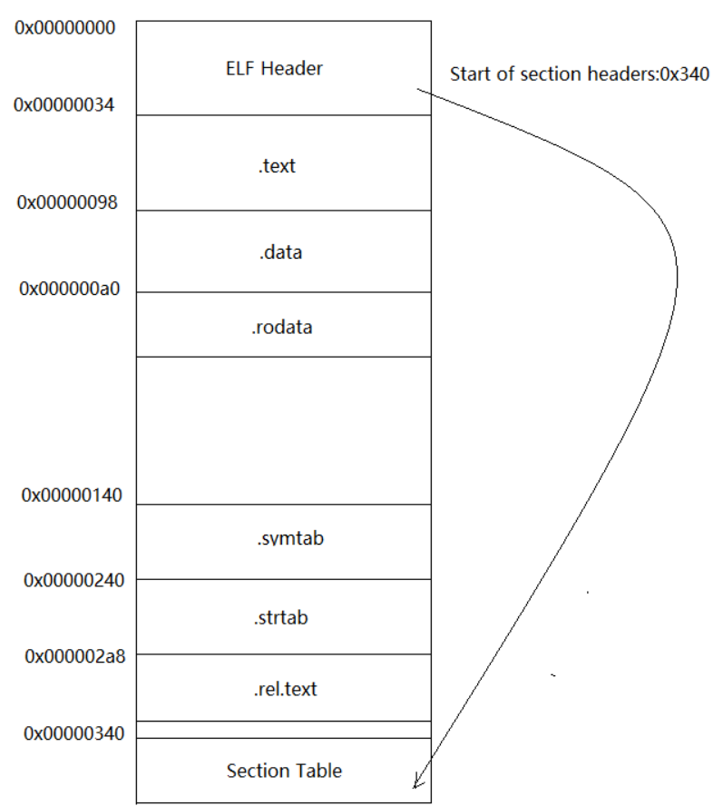
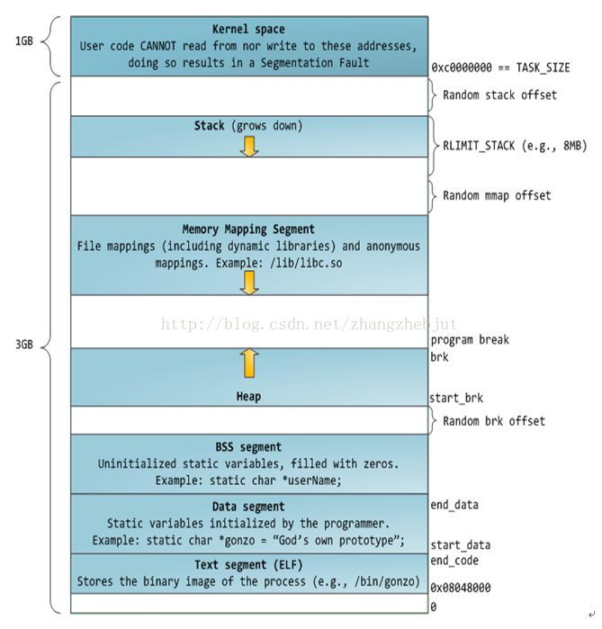

ELF文件
可重定位文件
这类文件包含了代码和数据，可以被用来链接成可执行文件或共享目标文件，静态链接库也可以归为这一类。
可执行文件
这类文件包含了可以直接执行的程序。
共享目标文件
这类文件包含了代码和数据，可在以下两种情况下使用：
链接器可以使用这种文件跟其他的可重定位文件和共享目标文件链接，产生新的目标文件。
动态链接器可以将几个共享目标文件与可执行文件结合，作为进程映像的一部分来运行。
核心转储文件
ELF文件格式
文件头（ELF header）
我们首先看一下elf.h中的文件内容
1 | /usr/include/elf.h |
- e_ident: 16个字节
- 前四个字节：所有ELF文件都必须相同的标识码
- 第五个字节：标识ELF的文件类型
- 第六个字节：字节序
- 第七个字节：ELF文件主版本号
- 后面的9个字节ELF标准没有定义
- e_type: ELF文件类型
- e_machine：ELF文件的CPU平台属性
- e_version：ELF文件版本
- e_entry：ELF程序的入口虚拟地址
- e_phoff：
- e_shoff：段表在文件中的偏移
- e_flags：ELF标识位，用来标识一些ELF文件平台相关的属性
- e_ehsize：ELF文件头本身的大小
- e_phentsize：
- e_phnum：
- e_shentsize：段表描述符的大小
- e_shnum：段表描述符的数量，其值等于ELF文件中拥有的段的数量
- e_shstrndx：段表字符串表所在的段在段表中的下标。
段表（Section header table）
1 | /* Section header. */ |
- sh_name：段名
- sh_type：段的类型
- sh_flags：段的标志位
- sh_addr：段虚拟地址
- sh_offset：段在文件中的偏移
- sh_size：段的长度
- sh_link：段的链接信息
- sh_info：段的链接信息
- sh_addralign：段地址对齐
- sh_entsize：项的长度
注意：段的名字对于编译器、链接器是有意义的，但是对于操作系统来说，并没有什么实质的意义，对于操作系统来说，一个段该如何处理取决于它的属性和权限。
段表的结构比较简单，它是一个以“Elf_Shdr”结构体为元素的数组，数组元素的个数等于段的个数，每个“Elf_Shdr”结构体对应一个段，“Elf_Shdr”又被称为段描述符。

Segment和Section?
一个“Segment”包含一个或多个属性类似的“Section”，对于相同权限的段，把它们合并在一起当作一个段进行映射。
映射以后在进程的虚拟空间中只有一个相对应的虚拟内存区域。这样做的好处是可以明显的减少页面内部碎片，从而节省内存空间。
“Segment”的概念实际上是从装载的角度重新划分了ELF的各个段，在将目标文件链接成可执行文件的时候，链接器会尽量把相同权限属性的段分配在同一空间。
总的来说，“Segment”和“Section”是从不同的角度来划分同一个ELF文件，从“Section”的角度来看就是链接视图，从“Segment”的角度来看就是执行视图。
Linux进程内存布局

看下面这段代码：
1 | test.c |
1 | walkerrev_ll@ll-PC:~/Desktop/Linux/第12章$ ./test |
我们查看test文件的各种段信息
1 |
|
我们再看一下进程中的虚拟空间分布：
1 | walkerrev_ll@ll-PC:~/Desktop/Linux/第12章$ cat /proc/46748/maps |
我们总结一下：
- .data段保存的是那些已经初始化了的全局静态变量和局部静态变量
- .rodata段存放的是只读数据，一般是程序里面的只读变量和字符串常量
- .bss段存放的是未初始化的全局变量和局部静态变量
- 程序被加载进内存之后，在执行的时候需要用到栈、堆等空间，他们在进程中的存在也是以虚拟内存区域的形式存在的
- 栈中存放的是局部变量
- 堆中的内存空间的是程序员自己手动申请的，使用完之后需要释放。